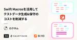

inSmartBank
https://blog.smartbank.co.jp/
B/43を運営する株式会社スマートバンクのメンバーによるブログです
フィード

新入社員がスタートダッシュの”バフ”を活用するコツを考えてみた 4
4
inSmartBank
はじめまして、2024年1月にスマートバンクにプロダクトマネージャーとして入社したinagakiです。 転職や異動で新しい環境で働き始める際に、皆さんが意識していることは何ですか？ 入社して2ヶ月経ったので、入社エントリがてら、新入社員としてどう最初の数ヶ月を過ごすといいんだっけを考えて書いてみました。 自己紹介 新卒でDeNAに入社し、ソーシャルゲームのプロデューサーをしたり、がん検査の研究開発プロジェクトで事業開発をしたり、プロダクトマネージャー（PM）と事業開発の間のようなキャリアを歩んできました。その後、オンライン薬局を運営する医療系スタートアップに転職して事業責任者などをやっていまし…
2日前

「1円でもずれてはいけない」フィンテックだからこそ細部へのこだわりを突きつめられる──サーバーサイドエンジニアmitani【SmartBank Members#13】 1
inSmartBank
「人々が本当に欲しかったものをつくる」── そんな想いで集まっているスマートバンクのメンバーたちを掘り下げる企画【SmartBank Members】。今回は、本企画の13人目として、サーバサイドエンジニアのmitani（三谷昌平）さんに話を聞きました。 スマートバンクの4人目社員として創業期から活躍し、YAPC::Hiroshima2024ではベストトーク賞を受賞したmitaniさんに、B/43の入金周りの開発から、5年間で変わってきたスマートバンクのカルチャー、そして今後の展望まで語っていただきました。 プロフィール 三谷昌平｜@shohei_mitani サーバーサイドエンジニア 新…
5日前

iOS版B/43における画面実装のモジュール分割戦略 1
inSmartBank
こんにちは。スマートバンクで iOS / Android エンジニアをしている nakamuuu です。 現在、iOS版B/43 では SwiftUI への移行やモジュール分割を伴う、画面実装のリファクタリングに継続的に取り組んでいます。まだまだ半ばではあるのですが、開発において抱えていた課題感やこれまで取り組んできたアクションについて紹介していきます。
7日前

Swift Macrosを活用してテストデータ生成および保守のコストを削減する 1
inSmartBank
こんにちは、スマートバンクでアプリエンジニアをしている ロクネム です。 弊社の開発する 家計簿サービス「B/43」 のiOSアプリでは、ドメイン・データ層では単体テストを、UI層ではXcode Previewsを書いて小さい範囲ですぐに動作を確認できるようにしています。 単体テストやPreviewを書く上で必要になるのがテストデータです。 テストを実装する上では、必要な値を指定してオブジェクトを生成し、テストデータとして利用する場面が多くあることと思います。 弊社ではこのテストデータの生成および保守に課題感を持っていました。
9日前

Connecting Users and Our Team 〜SmartBankのリサーチにおけるFigJam活用事例〜
inSmartBank
こんにちは！スマートバンクでUXリサーチャーをしているHarokaです。 このブログでは、2024年3月13日に実施された、Figma Japan 株式会社 2周年記念イベント「The ways we work」の登壇内容を抜粋・書き起こし形式でお届けします。 イベントのテーマは、職種横断（クロスファンクショナル）。 スマートバンクにおいては、リサーチの準備や分析、アイディア出し、その他デザイナーと画面へのフィードバックやチーム運営など、あらゆるところでFigJamを活用しています。 スマートバンクで、職種横断的に進めるリサーチプロジェクトを中心にご紹介しています！ SmartBankのFig…
14日前
リサーチとAI 良い関係性の築き方
inSmartBank
こんにちは！SmartBankでUXリサーチャーをしているHarokaです。 今回は、リサーチ業務に生成AIを取り入れる方法をテーマに、Notion Labs Japan 合同会社 ソリューションエンジニアの早川和輝 (@kzkhykw1991)さんとの対談をお届けします。 blog.smartbank.co.jp きっかけは2024年2月に実施したイベントで、その中でNotion AIのご紹介がありました。 データベースにAI機能を埋め込み、一気にタグ付けする様子などを目の当たりにして、これはすごいぞ！と率直に感動しました。 それと同時に、実は私が今行っている作業、AIに任せた方がいいものも…
17日前
スマートバンクのデザイン部をご紹介します
inSmartBank
こんにちは！ スマートバンクCXOのtakejuneです。 以前にスマートバンク(以下SB)のPMやUXリサーチャーを含めた、プロダクトデザインに関わるメンバーの紹介記事を執筆しました。 あれから時が経ち、メンバーも増え、組織体制も変化しました。 執筆した当時のチームは、プロダクト本部という名前になり、 メンバーも増えてより強く、大きくなりました。 デザイナー組織も、プロダクト本部内のデザイン部として変化しています。 今回は、そんな大きな成長を遂げたプロダクト本部の中のデザイン部にフォーカスし、 改めてチームのメンバーやチームの魅力を紹介したいと思います！ 最後にお約束の内容もございますので、…
1ヶ月前
YAPC::Hiroshima 2024でのスポンサー活動の振り返り
inSmartBank
こんにちはスマートバンクでCTOをしております＠yutadayoです。2/10に YAPC::Hiroshima 2024 が開催され、スマートバンクではイベントスポンサーをさせていただきました。 そして、今回もイベントへのスポンサーを通して様々なコミュニティイベントや広報企画を実施してきました。YAPC当日の感想も交えて、今回のスポンサーに関連して行った施策を振り返っていければと思います。 スポンサーの経緯 スマートバンクでは今年もエンジニアが参加するカンファレンスにスポンサーすることを決めておりました。しかし、スポンサーを行うカンファレンスは主にB/43の開発言語として使っているRuby関…
1ヶ月前
#CTOを破産から救おうチャレンジ クイズ at YAPC::Hiroshima 2024 の紹介と解説
inSmartBank
去る2024-02-10に取り行われたYAPC::Hiroshima 2024にて、弊社スマートバンクは椅子スポンサーをさせていただきました。椅子にチラシを掲載する権利を得た我々は、広島グルメマップの掲載、および「CTOを破産から救おうチャレンジ」というクイズ企画を行いました。 YAPC初スポンサーで椅子スポンサーさせてもらってます！自分の顔が至る所に貼ってあって若干気まずいw@ohbarye の冪等性の話を理解すると解けるクイズになっているので是非トライして見てください👍#yapcjapan #yapc_b pic.twitter.com/HPXfred0yX— 堀井 雄太 | SmartB…
1ヶ月前
N1を起点にした事業開発を進めるプロセスとは
inSmartBank
こんにちは！スマートバンクで事業開発を担当している土屋(@takeshi)です。 先日、スマートバンクのBizDevに興味を持ってくださった方に向けて、プロダクト「B/43」が挑む顧客課題の面白さやポテンシャル、事業検討の試行錯誤やナレッジ会社などの全体像をご紹介するページをリリースしました！ smartbank.co.jp スマートバンクのBizDevにおける主な役割としては「事業検討」「事業企画」「事業推進」があり、幅広い領域をカバーしながら日々アクションしています。 BizDevがカバーする領域 その中でも、特にスマートバンクらしい体制で取り組んでいるのが、 事業検討フェーズにおける「顧…
1ヶ月前
toBの事業企画経験をtoCに活かしインパクトをもたらす新事業を──BizDev takeshi【SmartBank Members#12】
inSmartBank
「人々が本当に欲しかったものをつくる」── そんな想いで集まっているスマートバンクのメンバーたちを掘り下げる企画【SmartBank Members】。今回は、本企画の12人目として、BizDev のtakeshi（土屋剛志）さんに話を聞きました。ステークホルダーが多い中、どんなパートナーともスムーズに信頼関係を構築し、事業を前進させていくtakeshiさんに、スマートバンクに入社した理由、スマートバンクの事業開発のお話、今後の展望を聞きました。 takeshiさんとCEO堀井翔太（shota）さんが話している全編は、Podcastからお聞きください↓ smartbank.co.jp プロフィ…
1ヶ月前
Zendeskで集計方法を改善し、お問い合わせを見える化した話
inSmartBank
はじめに こんにちは！スマートバンクでカスタマーサポート（CS）を担当しているnumaです。 先日問い合わせの分類と可視化の重要性や意義について、カスタマーサポートのnyancoによる記事「問い合わせの分類と可視化の方法」が公開されました。 今回はより具体的なアクションとして、Zendeskでお問い合わせ内容の集計方法を見直し、お問い合わせのトレンドやユーザーの課題を見える化するためにやったことを紹介します。 これからサポート運用を構築しようとしている方、定量データの取得・運用方法に迷っている方、Zendeskの活用方法に困っている方などのお役に立てたらうれしいです！ お問い合わせ集計の課題感…
1ヶ月前
Notionでユーザーリサーチを変える 〜スマートバンクのユーザーリサーチ文化の作り方〜
inSmartBank
こんにちは！スマートバンクでUXリサーチャーをしているHarokaです。 このブログでは、2024年2月9日に実施された、Notion さま主催イベント『Notionでユーザーリサーチを変える 〜スマートバンクのユーザーリサーチ文化の作り方〜』の登壇内容を抜粋・編集してお届けします。 スマートバンクでは、Notionを活用して業務を進めており、まさに日々のインフラ。私が入社した2022年当時、すでに会議の議事録やプロジェクトページなどはNotionで作られていました。 そんな身近なNotionの導入きっかけや活用法についていくつかご紹介していきます！ なぜNotionを導入したのか？ 創業当初…
2ヶ月前
YAPC::Hiroshima 2024でスマートバンクの社員と握手しましょう #yapcjapan
inSmartBank
みなさん、こんにちは〜！ YAPC::Hiroshima 2024のコアスタッフでもあるnyancoです。 ついにYAPC::Hiroshima 2024ですね！スマートバンクからは2名が登壇し、シルバースポンサー、椅子スポンサーとして協賛させていただきます！ smartbank.co.jp 本日は今回のスポンサーに関するトピックをまとめて紹介いたします。 スマートバンクから2名登壇します ohbaryeとshohei_mitaniの2人が、同じ部屋で、しかも連続で登壇します！今回のYAPCのテーマ｢what you like｣（おこのみ）に合わせたトークをお届けします！みなさん、11時から …
2ヶ月前
孤独のCTOグルメ総集編 #yapcjapan #YAPCグルメ
inSmartBank
こんにちは。今週末はいよいよYAPC::Hiroshima 2024ですね。 今回は、X(Twitter)でCTO堀井雄太の演技でご好評いただいた「孤独のCTOグルメ~広島編~」の総集編をお送りします！気合を入れて、広島現地でレポートしてきました。 YAPC::Hiroshima当日のご飯選びのお供にぜひご覧ください🍜 もうすぐYAPC::Hiroshima 2024！当日はランチセッションのご当地名物弁当も楽しみですが、会場の周りには美味しいお店がいっぱいあります 😄孤独のグルメの大ファンである弊社CTOが、会場近くのご飯屋さんをご紹介する #孤独のCTOグルメ を7回に分けて投稿します🍜ぜ…
2ヶ月前
Fintechへの深い理解を通して「Think N1」を体現するプロダクトを作る──サーバーサイドエンジニアuribou【SmartBank Members#11】
inSmartBank
「人々が本当に欲しかったものをつくる」── そんな想いで集まっているスマートバンクのメンバーたちを掘り下げる企画【SmartBank Members】。今回は、本企画の11人目として、サーバサイドエンジニアのuribou（若林裕太）さんに話を聞きました。業務委託として複数企業で働く中、「長くコミットできる会社」としてスマートバンクへのジョインを決めたuribouさん。スマートバンクのバリュー「Think N1」の本質、エンジニアとして思うFintechの面白さ、そして、現在メイン業務として取り組む不正対策チームの活動についてお話しいただきました。 uribouさんとCTO堀井雄太さんが話してい…
2ヶ月前
YAPC::Hiroshima 2024にスマートバンクのエンジニアが2名登壇します
inSmartBank
2024年2月10日に開催されるYAPC::Hiroshima 2024にスマートバンクから2名のエンジニアが登壇します！今回は、YAPC::Hiroshima 2024に参加される方向けに、2名の登壇者から発表の想いや見どころを紹介いたします。 VISAカードの裏側と “手が掛かる” 決済システムの育て方 @Shohei Mitani スケジュール 2月10日(土)11:00-11:20 ＠Track B fortee.jp 概要 クレジットカードの明細反映が遅い…!いくら使ったか分からないうちに請求額がすごいことになっている…!と困った経験はありませんか？なぜクレジットカードの明細はリアル…
2ヶ月前
問い合わせの分類と可視化の方法
inSmartBank
こんにちは。カスタマーサポート部のnyancoです。 今回はスマートバンクのカスタマーサポートチームが取り組んでいる問い合わせの分類と可視化について紹介します。 ※こちらのブログは2024/1/24（水）に行われた第20回 Customer系エンジニア座談会で「分類と可視化とCRE」というタイトルで発表した内容と補足のブログとなります。 こんな方におすすめです！ 「お問い合わせの可視化」をする、といっても何をすればいいのかわからない方 「お問い合わせの可視化」にこだわり続ける理由を知りたい方 前情報 B/43のカスタマーサポート部の職責は以下の通りです。 本イベントでは、多くの企業でカスタマー…
2ヶ月前
C向けFintech事業のグロースモデル
inSmartBank
こんにちは！スマートバンクでビジネス本部の責任者をしている赤池（@chihaya_akaike）です。 昨年の後半からBizdevの採用をスタートし、とてもありがたいことにスマートバンクとB/43についてお話をさせていただく機会が増えており、興味を持ってくださる方が多くとても嬉しく思っています！ 今後の事業のグロースの方向性についてお話をすると、「B/43は家計管理だけのサービスだと思っていました」や「そこまで見据えて事業とプロダクトを展開するのはワクワクしますね」というお声を多くいただくことに気づきました。 そこで、今回は未来に少し目を向けて、海外のC向けFintech事業の代表格である「チ…
2ヶ月前
YAPC::Hiroshima 2024 非公式予習会 開催レポート
inSmartBank
こんにちは！スマートバンクのサーバーサイドエンジニア部です！！ 1月23日に株式会社はてな様、STORES株式会社様と株式会社スマートバンクの3社合同で YAPC::Hiroshima 2024 非公式予習会 を開催させていただきました。 このブログでは当日のイベントで話された内容についてレポートしたいと思います！
2ヶ月前
スマートバンクのモバイルアプリ部をご紹介します
inSmartBank
こんにちは、スマートバンクCTOのyutaです。 スマートバンクでは、アプリとカードが一体となった家計簿サービス「B/43」を提供しており、2021年4月のリリースからもうすぐ3年が経とうとしています。 今回はそんなB/43のアプリ開発を担当するスマートバンクのモバイルアプリ部のご紹介をさせていただければと思います。
2ヶ月前
【デザイナー向けイベント】新春UI書き初め会開催レポート
inSmartBank
新春UI書き初め会を開催しました！ 2024年1月19日（金）にスマートバンクオフィスで新春UI書き初め会を開催しました！ スマートバンクのデザイナー主催のイベントとしては初のイベントでした。 日頃B/43を使ってくださっているデザイナーさんとみんなで楽しめるイベントを開催したいと思い、「新春UI書き初め会」という形で企画しました。 どういうイベントだった？ スマートバンクでは、アイデア出しとして不定期に「スマートバンク デザインソン」を開催しています。 この「スマートバンク デザインソン」は、短時間でよりよいアイデアを見つけるために、限られた時間の中でみんなでアイデア出しあい、発散、収束を行…
2ヶ月前
【1/23 火】やります、YAPC を最高に楽しむための「東京予習会」！
inSmartBank
こんにちは osyoyu です。スマートバンクで B/43 のサーバーサイドエンジニアをしています。 さて、早速本題です。来週 1/23 (火) 、YAPC::Hiroshima 2024 の「東京予習会」を開催します！ 株式会社はてな、STORES株式会社との共催です！ smartbank.connpass.com 日時 2024年1月23日（火）19:00（18:30開場） 会場 株式会社はてな 東京オフィス タイトルの通り、YAPC や Perl のことを「予習」して、当日を最高に楽しめるようになる会です。 そして今回、YAPC コアスタッフの karupanerura さんと papi…
2ヶ月前
B/43のサーバーサイド開発の醍醐味と伸びしろ
inSmartBank
こんにちは！サーバーサイドエンジニアの mitani です。 2023年に技術広報を始めたことで、少しずつB/43を知ってくださっている人が増えてきました。辰年の今年は、サービス名だけでなくB/43の機能やその実装の背景など、B/43を開発する楽しさや醍醐味をどんどん発信して、もっともっとB/43のエンジニアリングを好きになってもらえる人を増やしていこうと思います！ ということで、このブログではB/43のサーバーサイドエンジニアが最近開発していることを紹介しながら、Fintechサービスを開発する醍醐味と今後取り組んでいきたい伸びしろについてお伝えします！ できるだけ赤裸々に今の状況を “Be…
2ヶ月前
「なぜ作るか」共に考えるーーエンジニアが考えるリサーチ活用の意義
inSmartBank
こんにちは！スマートバンクでUXリサーチャーをしているHarokaです。 今回のブログでは、2023年11月に入社したエンジニアのchobishibaさんにインタビューするかたちで、エンジニアとリサーチャーの協業体制についてご紹介します！ CTOのyutaさんから、”開発の中にリサーチの工程が組み込まれていてWhyの部分を理解して開発できるのが弊社開発の強み”と評してもらったリサーチ環境。 開発の中にリサーチの工程が組み込まれていてWhyの部分を理解して開発できるのが弊社開発の強みでもあります。> 過去のリサーチは資産であり、それらが活用できる状態であるようリサーチャーで一元管理・保守運用して…
3ヶ月前
成果が出ないユーザーインタビューは何がダメだったのか？ ~「誰に聞くか」の探り方 ~
inSmartBank
こんにちは！ プロダクトマネージャーのじょー（@jouykw）です。 先日国内最大級のプロダクトマネージャー向けカンファレンス #pmconf2023 にて、公募セッションで登壇の機会を頂きました。 テーマは、プロダクトグロースに向けたユーザーインタビューの設計において、「誰に聞くか」という対象者選定プロセスの重要性や具体の進め方を提案するものです。ニッチなテーマだったのですが、思いの外たくさんの方々に聞いて頂き、反響をもらえて嬉しかったです。 本ブログでは、発表内容の要点を取り上げつつ、テーマ選定に至った背景、話し切れなかった点、プレゼン後に皆さんと議論させて頂いた点などについて補足をしなが…
3ヶ月前
エンジニア採用広報に全社で取り組み、認知を広げた半年間
inSmartBank
こんにちは。スマートバンク広報のchika(@chika_iwa_)です。 年の瀬ですが、この半年間で取り組んできた当社のエンジニア採用広報について書いてみます。 エンジニア採用広報を本格的にスタートさせたいけれど、どう進めたらいいか分からない 採用広報の専任がいない中、なかなか組織として採用広報に注力しきれない このようなお悩みを持つ方への参考として「全社でエンジニア採用広報に取り組む背景とプロセス」についてご紹介できたらと思います。 （先日、DevRel Guildのミートアップで登壇した内容のサマリです！） もともとの体制ときっかけ 職種横断でエンジニア採用広報チームを立ち上げた背景 課…
3ヶ月前
スマートバンクのコミュニケーションデザイン2023まとめ
inSmartBank
こんにちは！ スマートバンクのコミュニケーションデザイナー@yuki930&@mmitoです！ 2023年は、@mmitoの加入でスマートバンクのコミュニケーションデザインチームは超絶パワーアップしました！ さらにスマートバンクではコミュニケーションデザインの分野で、外部パートナーとして @wariemonさんと @transitkixさんに協力いただいており、またプロジェクト単位で、ブルーパドルの佐藤ねじさんや、動画クリエイターの下田芳彦さん、カメラマンの船島慶志さん、株式会社コロネのみなさんなど外部の強力なパートナーのみなさまのお力をお借りしながら日々制作を行っています。 今日は、そんなス…
3ヶ月前
SwiftUIにおけるDynamic Typeに対応したTypographyの実装
inSmartBank
こんにちは、スマートバンクでアプリエンジニアをしているロクネムです。 弊社ではデザインシステムを導入しており、ColorやTypographyなどのデザイントークンやコンポーネントライブラリをiOSアプリの実装でも利用しています。 導入してから約1年ほど経ちますが、 B/43という家計簿プリカアプリ の開発を通じて、SwiftUIで1画面を実装する上でかかる時間がかなり短くなったように感じます。 本記事ではそんなデザインシステムを活用した開発の中でも Typography にフォーカスし、B/43のiOSアプリにおいてどのようにTypographyを実装しているのかについてご紹介します。
3ヶ月前
GitHub Actionsを利用しPCI DSSの更新に向けたissuesを自動作成してトイルを削減した
inSmartBank
こんにちは！スマートバンクでSREをしている @maaaato です。 スマートバンクではVisaプリペイドカードを発行しており、PCI DSSというクレジットカード業界のセキュリティ基準を取得しています。 PCI DSSの要件には定期的に対応を必要とするものがあり、例えば90日毎にパスワードの変更を実施する（要件8 システムコンボーネントへのアクセスを識別・認証する）といった要件があります。 PCI DSSの更新時には対応したエビデンスを提出する必要があり、スマートバンクではGitHubに対応する要件のIssuesを作成しエビデンスとしています。 定期的にGitHubにIssuesを作成する…
3ヶ月前